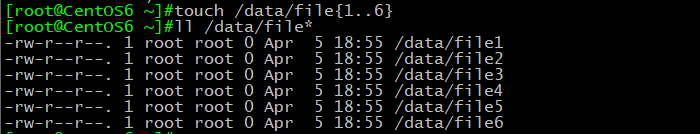
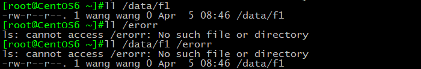
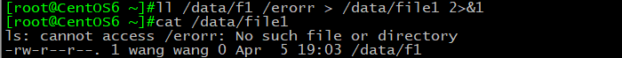
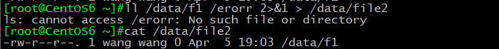
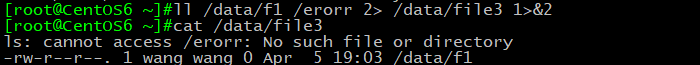
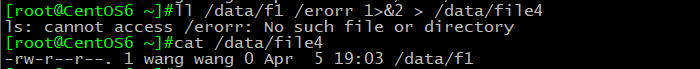
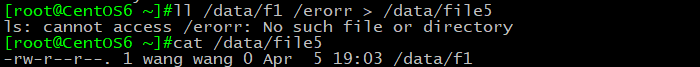
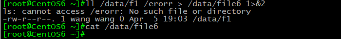

Linux给程序提供了三种I/O设备，即：
- 标准输入（STDIN） 0 默认接受来自键盘的输入
- 标准输出（STDOUT） 1 默认输出到终端窗口
- 标准错误（STDERR） 2 默认输出到终端窗口
同时linux中使用“>”和“>>”将标准输出和标准错误重新定向到文件中：
后跟重定向文件，文件内容会被覆盖
1 | > 把标准输出重定向到文件,文件内容会被覆盖 |
那么下面我们来讨论下几种重定向的变形用法：
首先我们先建file1-6的6个空文件

这里我们看到:
1 | ll /data/f1 显示标准输出（f1文件详细信息）； |
接下来我们来进行几个小实验:

实验1. ll /data/f1 /erorr > /data/file1 2>&1

结果:屏幕无显示，标准输出和标准错误输入到file1文件中
实验2.ll /data/f1 /erorr 2>&1 > /data/file2

结果:屏幕显示标准错误，标准输出输入到file2文件中
实验3.ll /data/f1 /erorr 2> /data/file3 1>&2

结果:屏幕无显示，标准输出和标准错误输入到file3文件中
实验4.ll /data/f1 /erorr 1>&2 > /data/file4

结果:屏幕显示标准错误，标准输出输入到file4文件中
实验5.ll /data/f1 /erorr > /data/file5

结果:屏幕显示标准错误，标准输出输入到file5文件中
实验6.ll /data/f1 /erorr > /data/file6 1>&2

结果:屏幕显示标准输出和标准错误，file6文件为空
观察6个小实验我们发现:
实验1,3得出的结果完全相同，屏幕无显示，标准输出和标准错误输入到file文件中。得出此结果也有两种
执行顺序的可能性：
可能性1：实验1可看做，标准输出先重定向到file文件中，标准错误然后重定向为标准输出再次重定向
到file文件中；实验3可看做，标准错误先重定向到file文件中，标准输出然后重定向为标准错误再次重定
向到file文件中，所以file文件中既有标准输入又有标准输出。
可能性2：实验1可看做，标准输出和错误都经过2>&1的重定向后，全变为标准输出，再输入进file1件中；
实验3可看做，标准输出和错误都经过1>&2的重定向后，全变为标准错误，再输入file3文件中。
于是我们有了实验6，ll /data/f1 /erorr > /data/file6 1>&2，得出结果屏幕显示标准输出和标准错误，file6
文件为空，由此可认为实验6执行了可能性2的执行过程。
结论1:当有1>&2或2>&1处于重定向组合命令结尾时，输出结果全部先执行1>&2或2>&1，再执行前面的重定向。
实验2,4,5得出的结果完全相同，即屏幕显示标准错误，标准输出输入到file5文件中
三条命令分别为：
ll /data/f1 /erorr 2>&1 > /data/file2
ll /data/f1 /erorr 1>&2 > /data/file4
ll /data/f1 /erorr > /data/file5
我们是否可以这样认为:
结论2:当2>&1或1>&2处在重定向组合命令中间位置时，2>&1或1>&2是不起作用的，可以忽略掉（此结论待定）